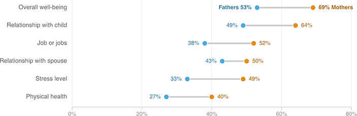

Mothers Say Child Care Improves Their Own Health And Relationship With Child
Share of parents saying that having their child receive care from a provider or program has had a “very positive impact” on each aspect of their own health or well-being

Notes
1. Asked of a subset of the survey group: 965 employed parents (508 mothers and 457 fathers)
2. Asked of a subset of the survey group: 916 married or partnered parents (469 mothers and 447 fathers)